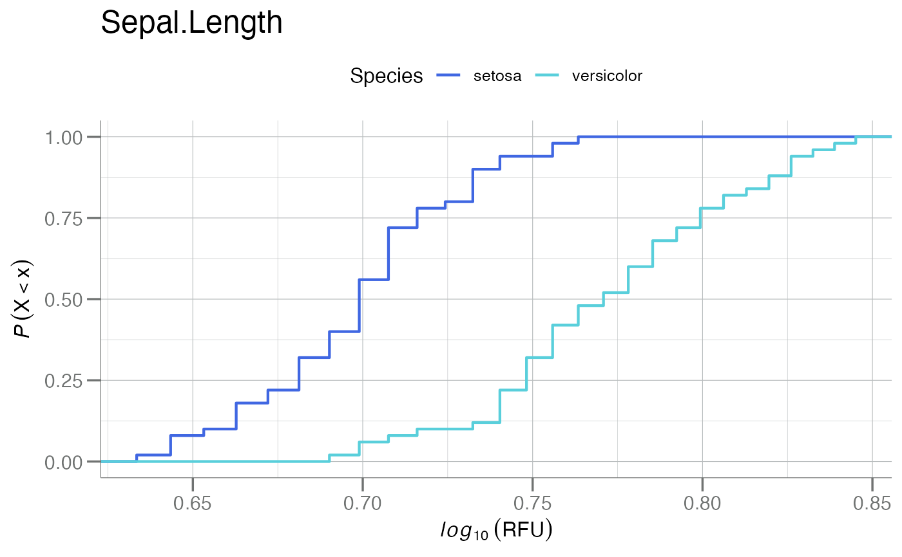
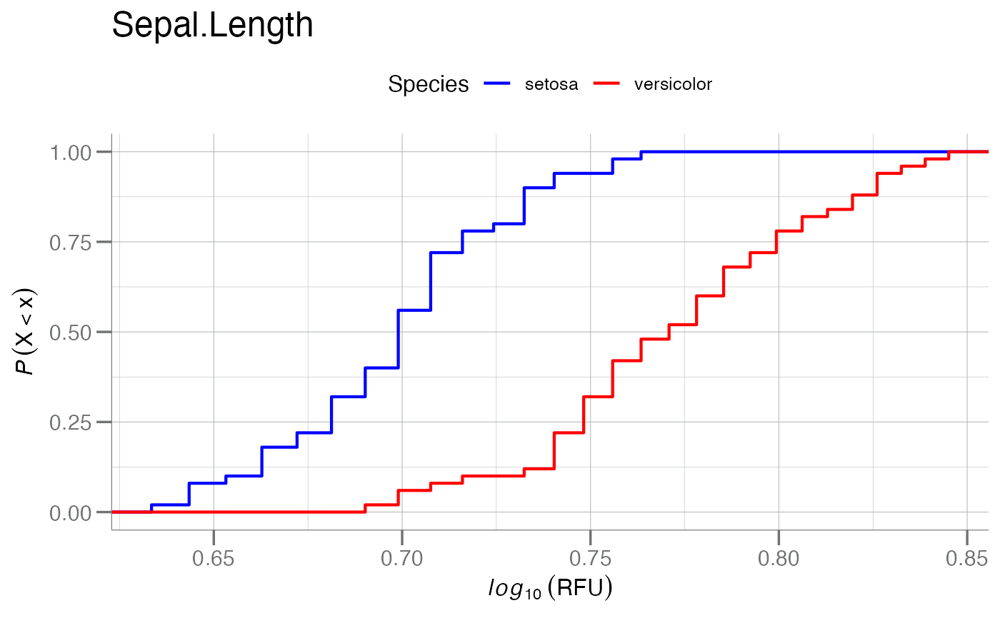
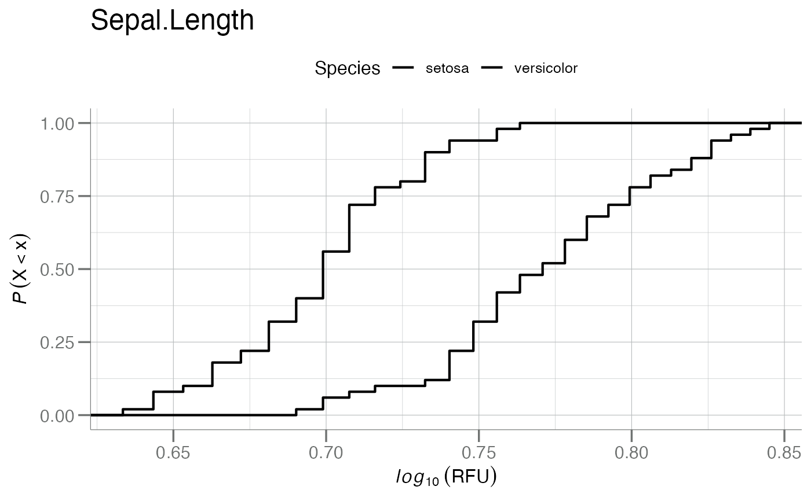
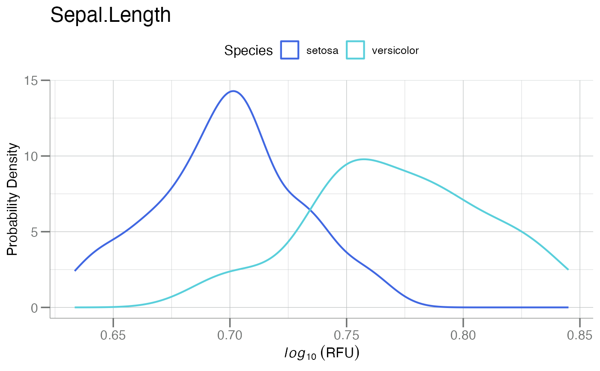
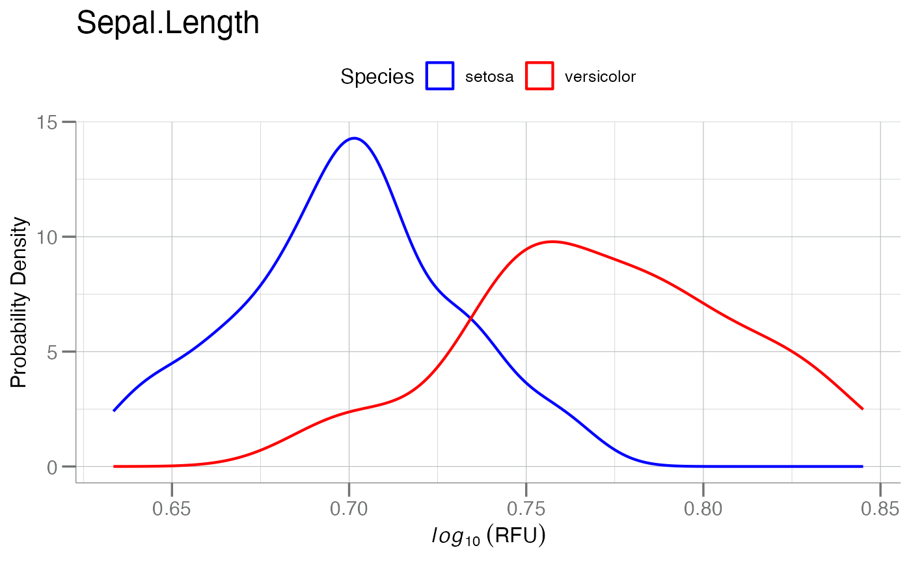

Create a Training Data Object
create_train.RdGenerate a training data set from a original parent data set typically via some subset of the original parent. Final groups must be binary, and generate a 2 factor level "response" column used in many downstream statistical testing functions.
is.tr_data() checks whether an object
is a tr_data class object.
Usage
create_train(data, ..., group_var, classes = NULL)
is.tr_data(data)
# S3 method for class 'tr_data'
plot(x, ft, main = ft, do_pdfs = FALSE, do_log = TRUE, ...)Arguments
- data
A
data.frameused to create a training data set.- ...
Arguments passed to
dplyr::filter()used to subset rows. If passing to the S3 plot method fortr_dataclass objects, additional arguments are passed toSomaPlotr::plotCDFbyGroup()via the....- group_var
character(1). Can be quoted or unquoted. Must be a column name ofdata.- classes
Either
NULL, where no factor conversion will be performed (default), or a stringcharacter(2)indicating first and second class labels respectively. See the Details section for more information about factor levels.- x
A
tr_dataobject.- ft
character(1). The name of a column indatacontaining values to generate CDFs or PDFs.- main
character(1). Title for the plot. Seeggplot2::ggtitle().- do_pdfs
logical(1). Should smoothed densities PDF be plotted?- do_log
logical(1). Should values be log10-transformed?
Value
A tibble with an additional tr_data class.
This object contains the subset training data with a
additional attributes about the groupings and the
"response" variable.
Logical. Whether data inherits from class tr_data.
Details
When specifying filtering variables, the factor levels
will be ordered alphabetically in the resulting "response"
variable unless ordering is specified by the classes
argument. This is important, for example, when performing
repeated univariate statistics where \(class2 - class1\),
i.e. the positive class is 2!
Functions
plot(tr_data): Plots a CDF, and optionally an accompanying smoothed PDF for a specific feature in a "tr_data" object.
Examples
# New "tr_data" object with default factor levels
classes <- c("setosa", "versicolor")
tr <- create_train(iris, Species %in% classes, group_var = Species)
tr
#> ══ Training Data Object ═══════════════════════════════════════════════
#> • response Species
#> • class labels 'setosa', 'versicolor'
#> • counts [50, 50]
#> • factor TRUE
#> • n 2
#> ───────────────────────────────────────────────────────────────────────
#> # A tibble: 100 × 5
#> Sepal.Length Sepal.Width Petal.Length Petal.Width Species
#> * <dbl> <dbl> <dbl> <dbl> <fct>
#> 1 5.1 3.5 1.4 0.2 setosa
#> 2 4.9 3 1.4 0.2 setosa
#> 3 4.7 3.2 1.3 0.2 setosa
#> 4 4.6 3.1 1.5 0.2 setosa
#> 5 5 3.6 1.4 0.2 setosa
#> 6 5.4 3.9 1.7 0.4 setosa
#> 7 4.6 3.4 1.4 0.3 setosa
#> 8 5 3.4 1.5 0.2 setosa
#> 9 4.4 2.9 1.4 0.2 setosa
#> 10 4.9 3.1 1.5 0.1 setosa
#> # ℹ 90 more rows
# Getting Variables
attr(tr, "response_var")
#> [1] "Species"
attr(tr, "class_labels")
#> [1] "setosa" "versicolor"
attr(tr, "counts")
#> setosa versicolor
#> 50 50
# with re-naming factors
tr2 <- create_train(iris, Species %in% classes,
group_var = Species, classes = rev(classes))
#> • Note: Class order is non-alphabetic: 'versicolor > setosa'
tr2
#> ══ Training Data Object ═══════════════════════════════════════════════
#> • response Species
#> • class labels 'versicolor', 'setosa'
#> • counts [50, 50]
#> • factor TRUE
#> • n 2
#> ───────────────────────────────────────────────────────────────────────
#> # A tibble: 100 × 5
#> Sepal.Length Sepal.Width Petal.Length Petal.Width Species
#> * <dbl> <dbl> <dbl> <dbl> <fct>
#> 1 5.1 3.5 1.4 0.2 versicolor
#> 2 4.9 3 1.4 0.2 versicolor
#> 3 4.7 3.2 1.3 0.2 versicolor
#> 4 4.6 3.1 1.5 0.2 versicolor
#> 5 5 3.6 1.4 0.2 versicolor
#> 6 5.4 3.9 1.7 0.4 versicolor
#> 7 4.6 3.4 1.4 0.3 versicolor
#> 8 5 3.4 1.5 0.2 versicolor
#> 9 4.4 2.9 1.4 0.2 versicolor
#> 10 4.9 3.1 1.5 0.1 versicolor
#> # ℹ 90 more rows
# S3 plot method
ft <- "Sepal.Length" # random feature
plot(tr, ft)
#> Registered S3 method overwritten by 'SomaPlotr':
#> method from
#> plot.Map SomaDataIO

plot(tr, ft, cols = c("blue", "red"))

plot(tr, ft, cols = c("black", "black")) # b/w

plot(tr, ft, do_pdfs = TRUE)

plot(tr, ft, do_pdfs = TRUE, cols = c("blue", "red"))
